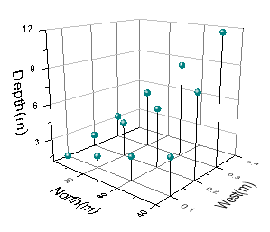

関連する動画はこちら：Creating Intersecting Surfaces Plots from Worksheets and Setting Transparency
関連する動画はこちら：Creating Intersecting Surfaces Plots from Worksheets and Setting Transparency
３次元のグラフは科学や工学、経済の分野で幅広い用途があります。Originには3Ｄ散布図、3Ｄ棒グラフ、3Ｄ曲面を含む幅広い3Ｄグラフの種類があります。Ｏｒｉginではこれらのグラフを素早く簡単に作成することができます。単純にデータを選択して作成したいプロットのボタンをクリックもしくはメニューコマンドからグラフを選択して作成できます。一度グラフを作成すれば、様々な方法でグラフを修正、操作することができます。回転、サイズ変更、複数の交差する曲面のプロットや、軸ラベル表示の変更などができます。グラフィカルに3Ｄグラフを回転、サイズ変更することはもちろん、テキストボックスに正確な値を入力して回転、サイズ変更することもできます。一般的には任意のグラフ要素を変更する場合にはその要素をダブルクリックすることで、ダイアログボックスが開き設定を編集することができます。ここでは3Dグラフの例を3つご紹介します。
| 
”3Ｄ平面内に”軸タイトルと軸ラベルを追加して行列から作成した3Ｄ散布図 |
|
|
Originは3ＤグラフでOpenGLをサポートしています。OpenGLを使ってプロットする場合のOriginでの最小システム要件が下記のようになっています。特にビデオカードとドライバの要件をご覧ください。
大規模なデータセット、追加の推奨事項： 大規模なデータセットを使用するユーザ（例えば、サイズが10MB以上のテキストファイルをインポートするユーザ）に対して、OriginLabは次の追加事項を推奨します。
|
|
バージョン2017から、2Dテキストオブジェクトや図形オブジェクト、表、画像、バブル図、及び OLEオブジェクトを、Originの3D openGL グラフに挿入することが出来ます。 |
下記がグラフタイプと各タイプのグラフ作成に使われるデータ形式です。 仮想行列の定義については、仮想行列から3Dおよび等高線グラフを作成するをご覧ください。
| グラフの種類 | ワークシート上のＸＹＺ形式 | ワークシート上のXYY形式 | 行列ウィンドウ | ワークシート上の仮想行列 |
|---|---|---|---|---|
|
可
(3Dカラーマップ三点曲面にはXYZZ列が必須です) |
不可 | 可 | 可 |
|
可 | 不可 | 可 | 不可 |
|
可 | 不可 | 不可 | 不可 |
|
不可 | 可 | 不可 | 不可 |
|
不可 | 不可 | 可 | 可 |
|
不可 | 不可 | 可 | 不可 |
| Note: 生のＸＹでプロットする等高線の三角法アルゴリズムはOrigin 2016で実行されました。以前のバージョンでは、X,Yデータに対する正規化が作図の前にいくつか行われていました。バージョン2016以降、XYZワークシートデータでの等高線図及び3D曲面は、 以前のバージョンで作成された同じデータとは、異なっています。この変更は、X値とY値の間でスケール範囲が大きく異なる場合に顕著に現れてきます。詳細は FAQ-822 をご覧ください |
行列データまたはワークシートデータから3Dグラフを作成するには、データを選択して、3Dおよび等高線ツールバーのグラフボタンをクリックする、もしくは作図メニューのグラフを選択するだけです。 仮想行列からグラフを作成するには、3Dおよび等高線ツールバーのグラフボタンをクリックし、現れたダイアログボックスで、XYZデータをセットし、グラフを作成します 仮想行列からグラフを作成することについての詳細は、仮想行列から3Dおよび等高線図を作成するをご覧ください。 Appendix 2 - グラフの種類には各3Dグラフタイプの詳細があり、そこで詳しい情報を参照できます。
3Dグラフの編集は、主に軸ダイアログと作図の詳細ダイアログで行われます。軸ダイアログについての詳細およびグラフ軸の編集方法については、グラフの軸にあります。 作図の詳細ダイアログについての詳細は、 グラフを編集するにあります。